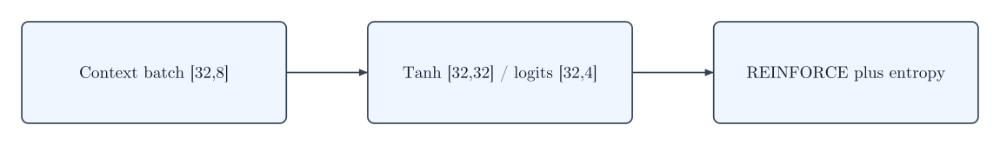
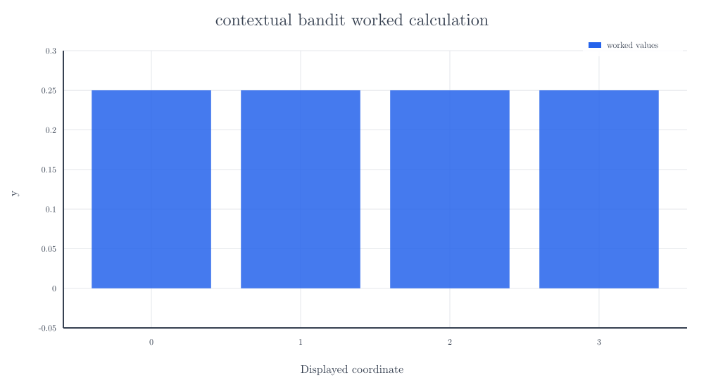
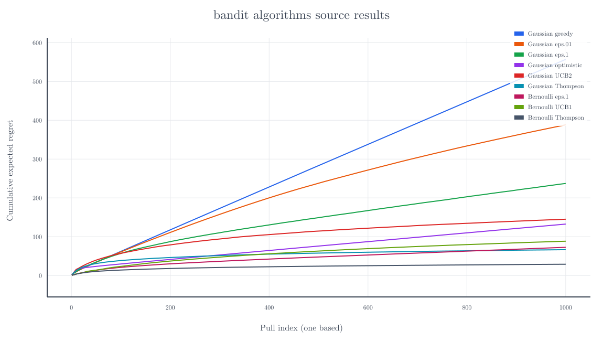

Bandit Algorithms: Epsilon-Greedy, UCB and Thompson Sampling
Abstract
Nine policies retain500 runs of1000 pulls each. Sample-average updates, priors and source draw ordering remain explicit. Finite sentinel scores are replaced with infinities for extreme-value correctness.
Follow the computation
#include <dm/dm.hpp>
int main(){std::filesystem::create_directories("build");dm::graphics::Diagram d(28,1150);dm::graphics::DiagramNodeStyle s;s.width=13;s.height=5;s.font_size=23;d.node("input",{-17,0},"Caller statistics",s);d.node("math",{0,0},"Posterior / confidence draw",s);d.node("output",{17,0},"Reward and cumulative regret",s);d.edge("input","math").edge("math","output").save_svg("build/bandit_algorithms_method.svg");}
A hand-checkable calculation
An unvisited arm has an infinite UCB score and wins before a visited arm. The displayed coordinates are visits0, visits2 and selected arm0. This checks exploration without sampling a reward.
#include <dm/dm.hpp>
int main(){namespace f=dm::rl::foundations;std::filesystem::create_directories("build");auto arm=f::UcbArm({0,2},{0,1},2,2);std::vector<double> values{0,2,double(arm)};if(arm!=0)return 1;std::print("| coordinate | computed value |\n|---:|---:|\n");for(size_t i=0;i<values.size();++i)std::print("| {} | {:.9f} |\n",i,values[i]);dm::nn::save_npz("build/bandit_algorithms_worked.npz",{{"values",dm::nn::from_vector(values)}});std::vector<double>x(values.size());std::iota(x.begin(),x.end(),0.);double low=std::min(0.,*std::min_element(values.begin(),values.end())),high=std::max(0.,*std::max_element(values.begin(),values.end())),span=std::max(1.,high-low);dm::graphics::RPlot::create().bars(x,values,"worked values",{37,99,235}).ylim(low-.05*span,high+.05*span).title("bandit algorithms worked calculation").x_label("Displayed coordinate").size(1000,550).save_svg("build/bandit_algorithms_worked.svg");}| coordinate | computed value |
|---|---|
| 0 | 0.000000000 |
| 1 | 2.000000000 |
| 2 | 0.000000000 |

Complete preserved experiment
Nine policies retain500 runs of1000 pulls each. Sample-average updates, priors and source draw ordering remain explicit. Finite sentinel scores are replaced with infinities for extreme-value correctness. All objectives, policy improvements, optimizer steps, collection and evaluation loops remain editable below. Additional checkpoint writes consume no RNG draws. The pull replay records the original seeded sequence.
#include <dm/dm.hpp>
namespace report_capture {
inline dm::nn::NamedTensors arrays;
template<class T> void Save(const std::string& name,const std::vector<T>& values){arrays.push_back({name,dm::nn::from_vector(values)});}
inline void Table(const std::string& name,const dm::rl::foundations::QTable&q){arrays.push_back({name,q.tensor()});}
struct Flush{~Flush(){if(!arrays.empty()){std::filesystem::create_directories("build");dm::nn::save_npz("build/bandit_algorithms_source.npz",arrays);}}};inline Flush flush;
}
// CMD: just run-nn bandit_algorithms
// Bandit algorithms: epsilon-greedy, UCB, Thompson sampling.
//
// Datamunge translation of tflow's bandit_algorithms. Each algorithm is run on many random bandit instances and judged by
// average reward, how often it pulls the best arm, and cumulative regret.
// The report records one Thompson run and checks aggregate regret ordering.
// Editable workflow support: checks.hpp
// Small runtime checks used by the executable nn examples. They stay on in
// Release builds and make the example exit nonzero on failure, so `just
// run-all-nn` doubles as a regression test against the recorded TF numbers.
// Editable workflow support: runtime.hpp
// Bounded demonstrations by default; opt into convergence experiments explicitly.
namespace example_runtime {
inline bool Full() {
const char* value = std::getenv("DATAMUNGE_EXAMPLES_FULL");
return value && std::string(value) == "1";
}
template <typename T> T Limit(T requested, T quick_limit) {
return Full() ? requested : std::min(requested, quick_limit);
}
inline void Describe() {
if (!Full())
std::cout << "Quick demonstration: bounded training; convergence metrics require "
"DATAMUNGE_EXAMPLES_FULL=1.\n";
}
} // namespace example_runtime
namespace check {
inline void Require(bool condition, const std::string& message) {
if (!condition) throw std::runtime_error(message);
}
// A short demonstration checks execution, derivatives and persistence; reaching
// a published accuracy/return requires the separately requested full schedule.
inline void TrainingQuality(bool condition, const std::string& message) {
if (example_runtime::Full()) Require(condition, message);
else std::cout << " full-training quality check deferred: " << message << '\n';
}
inline void Near(double actual, double expected, double tolerance, const std::string& message) {
if (!std::isfinite(actual) || !std::isfinite(expected) || std::abs(actual - expected) > tolerance)
throw std::runtime_error(message + ": got " + std::to_string(actual) + ", expected " + std::to_string(expected));
}
/// Expects `f` to throw; returns the message.
template <typename F>
std::string Throws(F&& f, const std::string& message) {
try {
f();
} catch (const std::exception& e) {
return e.what();
}
throw std::runtime_error(message + ": expected an exception");
}
} // namespace check
inline void Header(const std::string& title) {
const std::size_t pad = title.size() < 60 ? 60 - title.size() : 0;
std::cout << "\n== " << title << " " << std::string(pad, '=') << "\n";
}
// Editable workflow support: rl/bandit.hpp
namespace rl {
using datamunge::rl::environments::ArmNames;
using datamunge::rl::environments::MultiArmedBandit;
using datamunge::rl::environments::ContextualBandit;
}
namespace {
struct Algorithm {
std::string name;
// Returns the arm to pull given the counts and estimates so far.
virtual int Choose(const std::vector<int>& n, const std::vector<float>& q, int t, std::mt19937_64& rng) = 0;
virtual void Observe(int, float) {}
virtual void Reset() {}
virtual ~Algorithm() = default;
};
struct EpsilonGreedy : Algorithm {
float eps;
EpsilonGreedy(float e, std::string label) : eps(e) { name = label; }
int Choose(const std::vector<int>&, const std::vector<float>& q, int, std::mt19937_64& rng) override {
return dm::rl::foundations::BanditEpsilonGreedy(q,eps,rng);
}
};
struct Ucb : Algorithm {
float c;
explicit Ucb(float c_) : c(c_) { name = "UCB1 c=" + std::to_string(c).substr(0, 3); }
int Choose(const std::vector<int>& n, const std::vector<float>& q, int t, std::mt19937_64&) override {
return dm::rl::foundations::UcbArm(n,q,t,c);
}
};
// Thompson sampling for Gaussian rewards with known unit variance and a
// N(0, 1) prior per arm: the posterior mean is sum / (n + 1) and the
// posterior variance 1 / (n + 1). Pull the arm with the best posterior draw.
struct ThompsonGaussian : Algorithm {
std::vector<float> sum;
ThompsonGaussian() { name = "Thompson (Gaussian)"; }
void Reset() override { sum.clear(); }
int Choose(const std::vector<int>& n,const std::vector<float>&,int,std::mt19937_64& rng)override{
if(sum.empty())sum.assign(n.size(),0.f);
return dm::rl::foundations::ThompsonGaussianArm(n,sum,rng);
}
void Observe(int a, float r) override { sum[a] += r; }
};
// Thompson sampling for Bernoulli rewards with Beta(1, 1) priors.
struct ThompsonBeta : Algorithm {
std::vector<float> wins, losses;
ThompsonBeta() { name = "Thompson (Beta)"; }
void Reset() override { wins.clear(), losses.clear(); }
int Choose(const std::vector<int>& n, const std::vector<float>&, int, std::mt19937_64& rng) override {
if(wins.empty())wins.assign(n.size(),0.f),losses.assign(n.size(),0.f);return dm::rl::foundations::ThompsonBetaArm(wins,losses,rng);
}
void Observe(int a, float r) override { (r > 0 ? wins : losses)[a] += 1; }
};
struct Summary {
std::vector<double> reward, optimal, regret; // per step, averaged over runs
};
Summary Evaluate(Algorithm& alg, bool bernoulli, int runs, int steps, float q0) {
Summary s{std::vector<double>(steps), std::vector<double>(steps), std::vector<double>(steps)};
for (int run = 0; run < runs; ++run) {
std::mt19937_64 rng(run);
rl::MultiArmedBandit bandit = bernoulli ? rl::MultiArmedBandit::Bernoulli([&] {
std::vector<float> p(10);
for (float& v : p) v = std::uniform_real_distribution<float>(0, 1)(rng);
return p;
}())
: rl::MultiArmedBandit::Testbed(10, run);
bandit.Seed(run + 1);
const int K = bandit.num_arms();
std::vector<int> n(K, 0);
std::vector<float> q(K, q0); // sample-average estimates, optionally optimistic
alg.Reset();
double regret = 0;
for (int t = 0; t < steps; ++t) {
const int a = alg.Choose(n, q, t, rng);
bandit.reset();
const float r = bandit.step(a).reward;
n[a]++;
q[a] += (r - q[a]) / n[a];
alg.Observe(a, r);
regret += bandit.best_mean() - bandit.mean(a);
s.reward[t] += r;
s.optimal[t] += a == bandit.best_arm();
s.regret[t] += regret;
}
}
for (int t = 0; t < steps; ++t) s.reward[t] /= runs, s.optimal[t] /= runs, s.regret[t] /= runs;
static int index=0;auto tag=std::to_string(index++);report_capture::Save("regret_"+tag,s.regret);report_capture::Save("reward_"+tag,s.reward);report_capture::Save("optimal_"+tag,s.optimal);
return s;
}
// Prints the table and returns the summaries (for the checks).
std::vector<Summary> Table(const std::vector<std::pair<Algorithm*, float>>& algs, bool bernoulli, int runs, int steps) {
std::vector<Summary> all;
std::printf(" %-22s %28s %28s %10s\n", "", "average reward at step", "% optimal action at step", "regret");
std::printf(" %-22s", "algorithm");
for (int t : {10, 100, 500, 1000}) std::printf(" %6d", t);
std::printf(" ");
for (int t : {10, 100, 500, 1000}) std::printf(" %6d", t);
std::printf(" %10d\n", steps);
for (auto& [alg, q0] : algs) {
Summary s = Evaluate(*alg, bernoulli, runs, steps, q0);
std::printf(" %-22s", (alg->name + (q0 != 0 ? " Q0=5" : "")).c_str());
for (int t : {10, 100, 500, 1000}) std::printf(" %6.3f", s.reward[t - 1]);
std::printf(" ");
for (int t : {10, 100, 500, 1000}) std::printf(" %5.0f%%", 100 * s.optimal[t - 1]);
std::printf(" %10.1f\n", s.regret[steps - 1]);
all.push_back(std::move(s));
}
return all;
}
} // namespace
int main() {
try {
const int runs = 500, steps = 1000;
std::printf("== 10-armed Gaussian testbed (means ~ N(0,1), unit noise), %d runs x %d steps\n", runs, steps);
EpsilonGreedy greedy(0.f, "greedy"), eps01(0.01f, "eps-greedy 0.01"), eps1(0.1f, "eps-greedy 0.1"),
optimistic(0.f, "optimistic greedy");
Ucb ucb(2.f);
ThompsonGaussian thompson;
const std::vector<Summary> g =
Table({{&greedy, 0}, {&eps01, 0}, {&eps1, 0}, {&optimistic, 5.f}, {&ucb, 0}, {&thompson, 0}}, false, runs, steps);
std::printf("\n== 10 Bernoulli arms (p ~ U(0,1)), %d runs x %d steps\n", runs, steps);
ThompsonBeta beta;
Ucb ucb_b(1.f);
const std::vector<Summary> b = Table({{&eps1, 0}, {&ucb_b, 0}, {&beta, 0}}, true, runs, steps);
std::cout << "\n Regret grows linearly for fixed-epsilon policies and logarithmically for UCB and Thompson.\n";
// Capture the first 40 Thompson pulls on a fresh testbed.
std::cout << "\n-- 40 pulls of Thompson sampling on a 10-armed testbed\n";
int best_pulls = 0;
std::vector<std::pair<int, float>> pulls;
{
rl::MultiArmedBandit bandit = rl::MultiArmedBandit::Testbed(10, 7);
bandit.Seed(8);
std::mt19937_64 rng(3);
std::vector<int> n(10, 0);
std::vector<float> q(10, 0.f);
thompson.Reset();
for (int t = 0; t < 40; ++t) {
const int a = thompson.Choose(n, q, t, rng);
bandit.reset();
const float r = bandit.step(a).reward;
pulls.emplace_back(a, r);
n[a]++, q[a] += (r - q[a]) / n[a];
thompson.Observe(a, r);
}
std::filesystem::create_directories("build");
std::filesystem::create_directories("figures");
const std::string replay = "bandit_algorithms_thompson.mp4";
dm::rl::environments::save_bandit_replay(10, pulls, "build/" + replay, bandit.best_mean());
std::filesystem::copy_file("build/" + replay, "figures/" + replay,
std::filesystem::copy_options::overwrite_existing);
std::vector<int> arms;
std::vector<float> rewards;
for (const auto& [arm, reward] : pulls) {
arms.push_back(arm);
rewards.push_back(reward);
}
report_capture::Save("replay_arm", arms);
report_capture::Save("replay_reward", rewards);
best_pulls = n[bandit.best_arm()];
std::printf(" best arm %d (mean %.2f) was pulled %d of 40 times\n", bandit.best_arm(), bandit.best_mean(),
best_pulls);
}
// ---- Checks: the lessons the tables teach.
// Gaussian rows: 0 greedy, 1 eps 0.01, 2 eps 0.1, 3 optimistic, 4 UCB, 5 Thompson.
const auto regret = [](const Summary& s) { return s.regret.back(); };
for (int i : {2, 3, 4, 5})
check::Require(regret(g[i]) < regret(g[0]), "an exploring algorithm should have less regret than pure greedy");
check::Require(regret(g[4]) < regret(g[2]) && regret(g[5]) < regret(g[2]),
"UCB and Thompson should have less regret than eps-greedy 0.1");
check::Require(g[2].optimal.back() > g[0].optimal.back() + 0.2,
"eps-greedy 0.1 should find the best arm far more often than greedy");
check::Require(g[5].optimal.back() > 0.8, "Thompson should pull the best arm > 80% of the time by step 1000");
// Bernoulli rows: 0 eps 0.1, 1 UCB c=1, 2 Thompson (Beta).
check::Require(regret(b[2]) < 0.5 * regret(b[0]) && regret(b[2]) < 0.5 * regret(b[1]),
"Bernoulli regret: Thompson (Beta) should beat eps-greedy and UCB by a wide margin");
// Linear vs logarithmic growth: eps-greedy's regret over steps 500-1000 is
// still a large share of its first 500 steps; Thompson's is much smaller.
const auto late_share = [](const Summary& s) { return (s.regret[999] - s.regret[499]) / s.regret[499]; };
std::printf("\n regret over steps 501-1000 / regret over steps 1-500: eps-greedy 0.1 %.2f, Thompson (Beta) %.2f\n",
late_share(b[0]), late_share(b[2]));
check::Require(late_share(b[0]) > 2 * late_share(b[2]),
"regret should grow ~linearly for eps-greedy and sublinearly for Thompson");
std::cout << "\naggregate regret and action-selection checks passed\n";
} catch (const std::exception& e) {
std::cerr << "FAILED: " << e.what() << "\n";
return 1;
}
return 0;
}
== 10-armed Gaussian testbed (means ~ N(0,1), unit noise), 500 runs x 1000 steps
average reward at step % optimal action at step regret
algorithm 10 100 500 1000 10 100 500 1000 1000
greedy 0.861 1.000 1.081 1.026 28% 34% 34% 34% 556.9
eps-greedy 0.01 0.860 1.039 1.266 1.314 28% 36% 47% 57% 388.3
eps-greedy 0.1 0.745 1.181 1.453 1.366 25% 52% 76% 79% 237.2
optimistic greedy Q0=5 0.034 1.437 1.514 1.460 9% 70% 71% 71% 132.5
UCB1 c=2.0 0.034 1.309 1.557 1.521 9% 64% 83% 88% 145.0
Thompson (Gaussian) 0.566 1.461 1.597 1.557 27% 76% 89% 93% 66.5
== 10 Bernoulli arms (p ~ U(0,1)), 500 runs x 1000 steps
average reward at step % optimal action at step regret
algorithm 10 100 500 1000 10 100 500 1000 1000
eps-greedy 0.1 0.580 0.792 0.864 0.840 15% 45% 72% 72% 72.6
UCB1 c=1.0 0.506 0.782 0.840 0.868 10% 34% 58% 69% 88.3
Thompson (Beta) 0.592 0.856 0.898 0.898 16% 60% 83% 86% 29.0
Regret grows linearly for fixed-epsilon policies and logarithmically for UCB and Thompson.
-- 40 pulls of Thompson sampling on a 10-armed testbed
best arm 3 (mean 1.46) was pulled 1 of 40 times
regret over steps 501-1000 / regret over steps 1-500: eps-greedy 0.1 0.52, Thompson (Beta) 0.21
aggregate regret and action-selection checks passedInspect the actual experiment results
Noisy reward and optimal-action histories are saved alongside all nine cumulative regret curves. Gaussian and Bernoulli testbeds have different reward scales; compare policies within each testbed.
#include <dm/dm.hpp>
int main(){auto archive=dm::nn::load_npz("build/bandit_algorithms_source.npz");auto get=[&](const std::string& name){auto it=std::find_if(archive.begin(),archive.end(),[&](const auto& p){return p.first==name;});if(it==archive.end())throw std::runtime_error("missing source series "+name);return it->second.to_vector<double>();};auto plot=dm::graphics::RPlot::create();{auto values=get("regret_0");std::vector<double>x;x.resize(values.size());std::iota(x.begin(),x.end(),1.);plot.lines(x,values,"Gaussian greedy",{37,99,235});}{auto values=get("regret_1");std::vector<double>x;x.resize(values.size());std::iota(x.begin(),x.end(),1.);plot.lines(x,values,"Gaussian eps.01",{234,88,12});}{auto values=get("regret_2");std::vector<double>x;x.resize(values.size());std::iota(x.begin(),x.end(),1.);plot.lines(x,values,"Gaussian eps.1",{22,163,74});}{auto values=get("regret_3");std::vector<double>x;x.resize(values.size());std::iota(x.begin(),x.end(),1.);plot.lines(x,values,"Gaussian optimistic",{147,51,234});}{auto values=get("regret_4");std::vector<double>x;x.resize(values.size());std::iota(x.begin(),x.end(),1.);plot.lines(x,values,"Gaussian UCB2",{220,38,38});}{auto values=get("regret_5");std::vector<double>x;x.resize(values.size());std::iota(x.begin(),x.end(),1.);plot.lines(x,values,"Gaussian Thompson",{8,145,178});}{auto values=get("regret_6");std::vector<double>x;x.resize(values.size());std::iota(x.begin(),x.end(),1.);plot.lines(x,values,"Bernoulli eps.1",{190,24,93});}{auto values=get("regret_7");std::vector<double>x;x.resize(values.size());std::iota(x.begin(),x.end(),1.);plot.lines(x,values,"Bernoulli UCB1",{101,163,13});}{auto values=get("regret_8");std::vector<double>x;x.resize(values.size());std::iota(x.begin(),x.end(),1.);plot.lines(x,values,"Bernoulli Thompson",{71,85,105});}plot.title("bandit algorithms source results").x_label("Pull index (one based)").y_label("Cumulative expected regret").size(1150,650).save_svg("build/bandit_algorithms_results.svg");}
The single 40-pull replay illustrates the sampling variation of Thompson sampling. The aggregate curves summarize performance across independent runs.
Interpretation and provenance
Read online reward, greedy evaluation and any auxiliary bonus as separate quantities. The source checks remain part of the executable experiment; success means those particular seeded checks passed. No result here asserts TensorFlow equivalence without its recorded fixtures. Canonical APIs contain reusable state representations and mathematical operations; every fitting, episode and convergence loop is visible in this report.
Pull replay
This seeded run draws from the posterior of each arm and selects the largest draw. Green marks an observed payout at or above the best arm’s true mean.